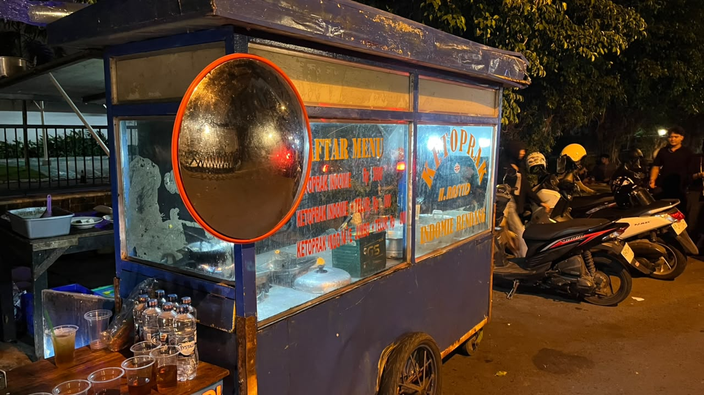
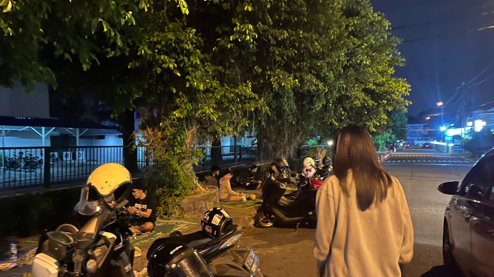
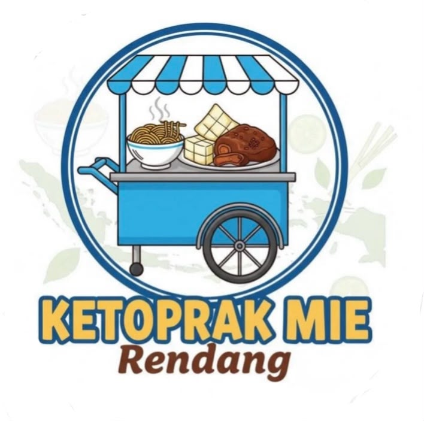
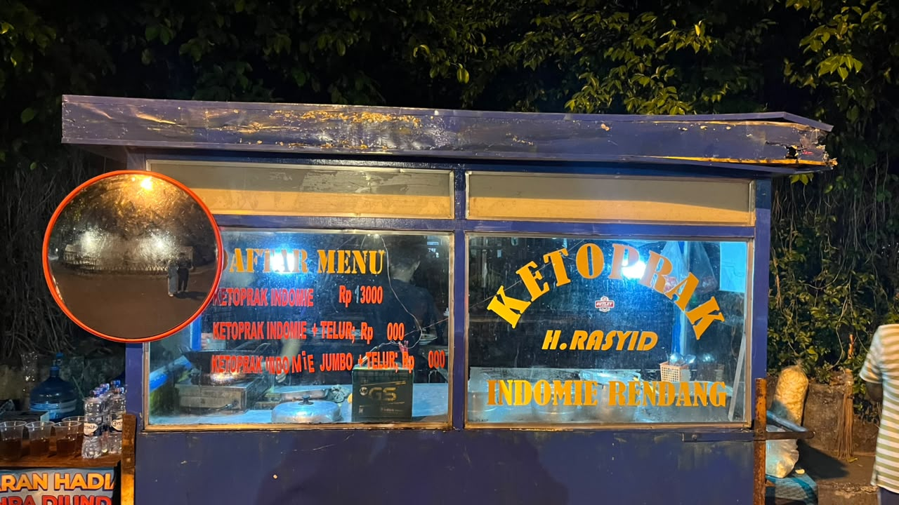
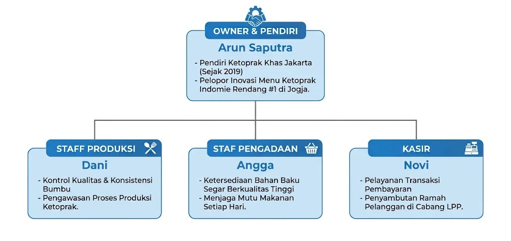

Lokasi Utama (Pusat)
Jalan LPP, Yogyakarta
Cabang Lain: Maguwo, UNY, & Lempuyangan
Nikmati kelezatan Ketoprak Khas Jakarta jalan LPP. Berawal dari dekat Ambarrukmo Plaza tahun 2019 hingga kini memiliki 4 cabang, menyajikan ketoprak biasa dan inovasi Indomie Rendang yang juara!
Tahun Pengalaman (Sejak 2019)
Cabang di Jogja
Rasa Autentik Jakarta

Perjalanan kuliner dari dekat Ambarrukmo Plaza hingga menjadi favorit di Jalan LPP Yogyakarta
Awal jualan pada tahun 2019 di dekat Ambarrukmo Plaza sebagai ketoprak biasa. Pada tahun 2023, kami berpindah ke Jalan LPP dan terus berinovasi memadukan ketoprak dengan Indomie Rendang yang ternyata sangat cocok dan disukai banyak orang!
Owner & Pendiri
Lokasi Utama
Jalan LPP Yogyakarta


Pengalaman Kuliner Sejak 2019
Dari lapak pertama dekat Ambarrukmo Plaza tahun 2019 hingga kini memiliki 4 cabang aktif di Jogja. Konsisten menyajikan kelezatan ketoprak Jakarta dan inovasi rasa terbaik.
Pilihan porsi ketoprak lezat dan minuman segar penusuk dahaga
Ketoprak khas Jakarta dengan isian lengkap ketupat, bihun, tahu goreng, tauge, kerupuk, dan siraman bumbu kacang gurih mantap (Rp 15.000).
Porsi lebih puas dengan isian ekstra melimpah dan bumbu kacang spesial untuk menemani lapar beratmu (Rp 17.000).
Porsi paling jumbo maksimal, sangat mengenyangkan dengan bumbu melimpah ruah dan ekstra kerupuk renyah (Rp 19.000).
Inovasi legendaris pelopor Ketoprak Indomie Rendang #1 di Jogja! Perpaduan nikmat ketoprak dengan bumbu rendang khas yang juara di lidah.
Minuman teh manis segar (dingin atau hangat) yang sangat pas mendampingi gurihnya bumbu kacang ketoprak (Rp 3.000).
Air mineral botol dingin atau netral untuk melepas dahaga Anda setelah menikmati lezatnya porsi ketoprak (Rp 4.000).
Cabang utama tempat kami menyajikan Ketoprak Khas Jakarta dan Indomie Rendang favorit sejak pindah tahun 2023.
Hadir melayani penikmat kuliner ketoprak area Maguwo dan sekitarnya dengan kualitas rasa yang sama mantapnya.
Pilihan utama makanan lezat, ramah kantong, dan mengenyangkan untuk mahasiswa di sekitar kawasan kampus UNY.
Melayani sajian ketoprak khas Jakarta yang lezat dan nikmat bagi Anda yang berada di area Lempuyangan.
Alasan utama mengapa Ketoprak Khas Jakarta Jalan LPP selalu menjadi pilihan kuliner favorit di Jogja
Mengombinasikan resep autentik khas Betawi dengan inovasi rasa kekinian yang terbukti cocok di lidah para pecinta kuliner.

Penyajian segar dan cepat dari tim staf produksi agar rasa gurih hangat ketoprak tetap terjaga.
Pengadaan bahan baku segar setiap hari untuk menjamin kebersihan dan mutu sajian rasa.
Kombinasi bumbu racikan khas Jakarta dengan Indomie Rendang yang lezat dan digemari.
Rasakan kenikmatan racikan bumbu kacang khas Jakarta yang pas dan konsisten di setiap suapan.
Pilihan cabang kami di Jalan LPP, Maguwo, UNY, dan Lempuyangan Yogyakarta

Bisa Pesan Tingkat Kematangan Telur

Inovasi menu pelopor #1 di Jogja

Tersedia porsi Biasa, Jumbo, & Super Jumbo
Temukan informasi seputar lokasi cabang, menu andalan, sejarah singkat, dan tim kami di Ketoprak Khas Jakarta Jalan LPP Yogyakarta.
Kami memiliki total 4 cabang di Yogyakarta yaitu di Jalan LPP (Cabang Utama/Pusat), Maguwo, area Kampus UNY, dan Lempuyangan. Sebelumnya kami pertama kali buka pada tahun 2019 di dekat Ambarrukmo Plaza sebelum pindah ke Jalan LPP pada tahun 2023.
Kami merupakan pelopor Ketoprak Indomie Rendang #1 di Jogja! Awalnya kami menjual ketoprak biasa, lalu mencoba melakukan inovasi rasa dengan memadukan ketoprak dan bumbu Indomie Rendang yang ternyata sangat cocok, unik, dan disukai banyak pelanggan.
Menu makanan kami meliputi Ketoprak Biasa (Rp15k), Ketoprak Jumbo (Rp17k), Ketoprak Super Jumbo (Rp19k), serta menu spesial pelopor Ketoprak Indomie Rendang #1. Untuk minuman, tersedia Es Teh (Rp3k) dan Air Mineral (Rp4k).
Usaha ini didirikan dan dimiliki oleh Arun Saputra sejak tahun 2019. Khusus untuk operasional cabang Jalan LPP, didukung oleh tim handal yaitu Novi sebagai Kasir, Dani sebagai Staff Produksi, dan Angga sebagai Staf Pengadaan.
Anda bisa langsung datang ke salah satu dari 4 cabang kami di Jogja (Jalan LPP, Maguwo, UNY, atau Lempuyangan) atau menghubungi kontak kami melalui informasi yang tertera di website untuk pemesanan langsung.
Bagan alur tim operasional dan pendiri Ketoprak Khas Jakarta Jalan LPP

Kunjungi cabang utama kami di Jalan LPP atau cabang lainnya di Yogyakarta
Nikmati kelezatan Ketoprak Khas Jakarta dan Ketoprak Indomie Rendang #1 langsung di cabang terdekat Anda.
Jalan LPP, Yogyakarta
Cabang Lain: Maguwo, UNY, & Lempuyangan
Cabang Jalan LPP (Kasir: Novi)
Tersedia Pesan Antar & Makan di Tempat
Buka Setiap Hari
Melayani Porsi Biasa, Jumbo & Super Jumbo
Punya pertanyaan seputar menu Ketoprak Indomie Rendang atau pemesanan porsi acara? Hubungi kami di bawah ini.